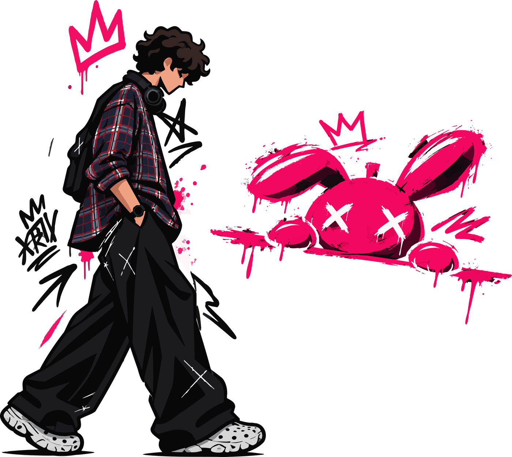
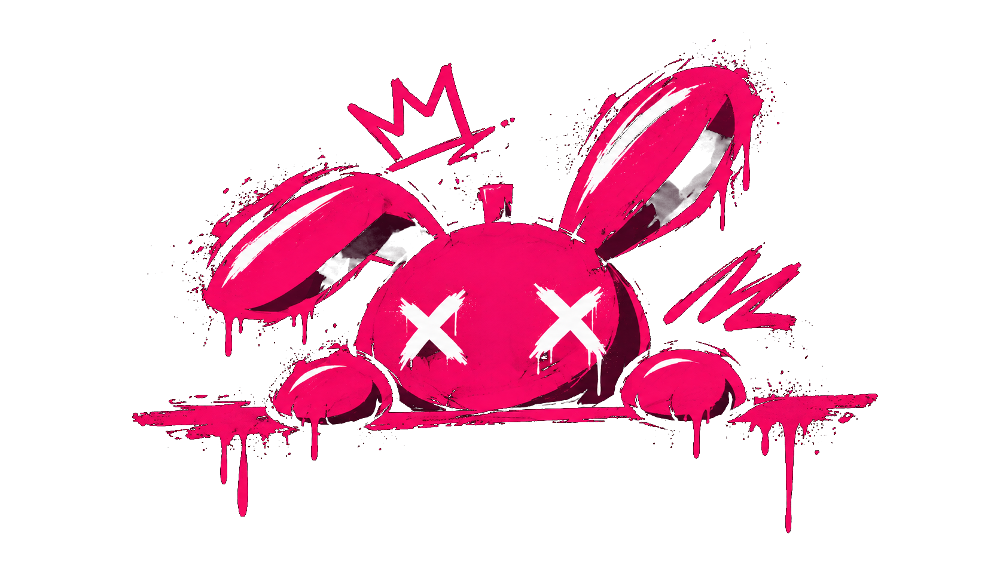
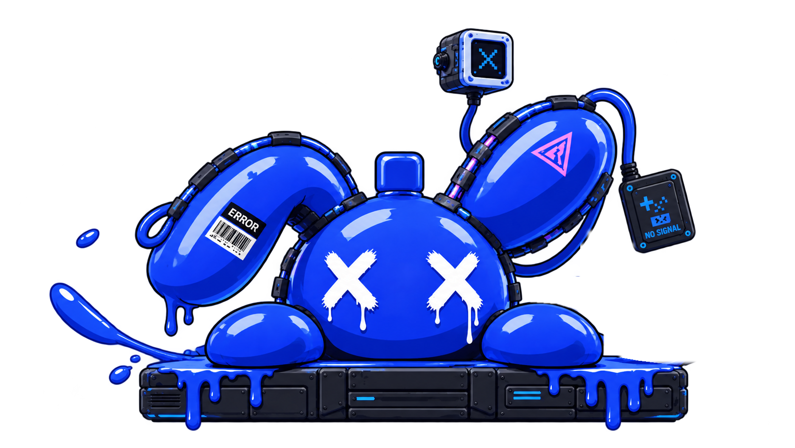
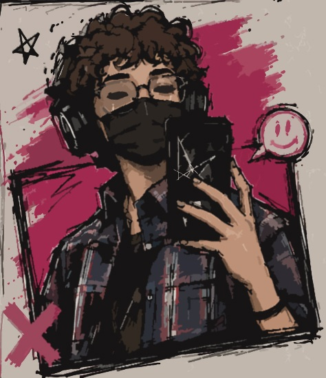
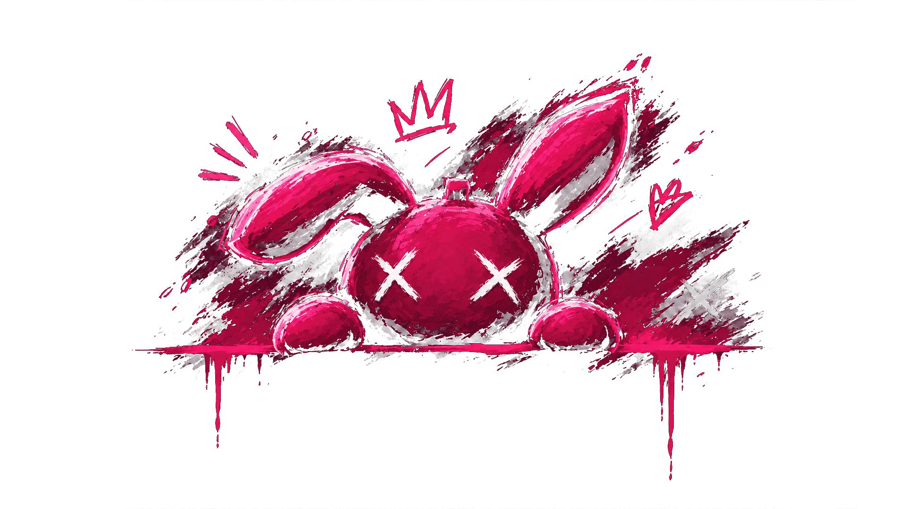

Графический дизайнер
Дизайн карточек товаров для сайта.



Превращаю идеи в визуальные истории.
И даю им жизнь.

DESIGNER / SINCE 2022С 2022 года занимаюсь графическим дизайном. За это время освоила композицию, типографику, цветовую гармонию и работу со стилем. Понимаю, как визуал должен решать задачу, и всегда ищу в каждом элементе смысл.
Работала над учебными и личными проектами: айдентика, постеры, обложки, контент для соцсетей. Постоянно слежу за трендами, развиваю навыки. Открыта к реальным проектам, чтобы расти как специалист и создавать качественный продукт.
Дизайн карточек товаров для сайта.
Съёмка мероприятий и портретов.
Создание карточек и визуальных материалов.
Графический дизайн.
Композиция, типографика, цвет, айдентика, digital-дизайн. Практика и современные подходы.
Photoshop · Illustrator · InDesign · Figma · Lightroom
Собственные идеи. Настоящие продукты.
Место, где мои идеи становятся проектами.
САЙТ / [ТВОЯ РОЛЬ] / КОНЦЕПТТВОЙ СЛЕДУЮЩИЙ ШАГ
Отдельное приложение. Своя история.
ПРИЛОЖЕНИЕ / [ТВОЯ РОЛЬ] / КОНЦЕПТ
НЕ ВСЁ ДОЛЖНО БЫТЬ СЕРЬЁЗНЫМ. ↗Пробую формы. Ищу собственный почерк.
ЭКСПЕРИМЕНТ / [ТВОЯ РОЛЬ] / КОНЦЕПТЛоготипы, стиль и визуальные системы
↗Типографика, композиция, выразительная подача
↗Карточки товаров и контент для соцсетей
↗Портреты и съёмка мероприятий
↗Место для собственных сайтов и приложений.
Не название всего, что я делаю.
А одна из идей, которым я дал форму.
Проект, вопрос или просто «привет».
Давай начнём с одного сообщения.